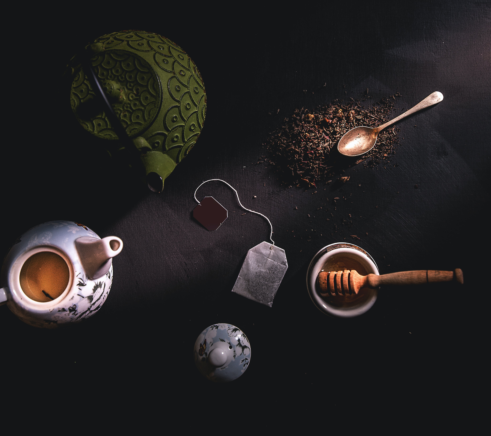

Grüner Tee

Grüner Tee oder Grüntee (chinesisch 綠茶 / 绿茶, Pinyin lǜchá, Jyutping luk6caa4, japanisch 緑茶 ryokucha) ist eine Teeart, bei der die Teeblätter im Gegensatz zu schwarzem Tee nicht fermentiert wurden. Wegen der anderen Verarbeitung werden für grünen Tee eher die Blätter von Camellia sinensis gegenüber der Varietät assamica bevorzugt, da sich die kleinblättrige, zartere Sorte besser eignet. Grüner Tee unterscheidet sich von schwarzem Tee unter anderem in der Zubereitung, im Geschmack, den Inhaltsstoffen und Wirkungen des Aufgusses.
Herstellung

Nach dem Welken der frisch gepflückten Blätter verhindert ein kurzes Erhitzen, Rösten oder Dämpfen der Teeblätter die Oxidation. Aus diesem Grund bleiben nahezu alle im frischen Blatt vorhandenen Wirkstoffe erhalten. Die Umwandlung der Inhalte u. a. in Aromastoffe ist unterbunden. Wie der Schwarztee wird auch der Grüntee gerollt, hier aber nur, um das Teeblatt zur Weiterverarbeitung geschmeidig und den Weg der Inhaltsstoffe in die Tasse frei zu machen.
Inhaltsstoffe
Der wichtigste Inhaltsstoff des Tees ist das anregende Koffein, das früher im Zusammenhang mit Tee auch als Tein, Teein oder Thein bezeichnet wurde. Der Koffeingehalt variiert je nach Grünteesorte sehr deutlich. Grundsätzlich weisen die japanischen Sorten Gyokuro und Sencha im Teewasser die höchsten und Kukicha und Bancha die niedrigsten Werte auf. Weitere Bestandteile der Teeblätter sind Catechine, die wichtigsten Vertreter sind Epicatechin (EC), Epicatechingallat (ECG), Epigallocatechin (EGC) und Epigallocatechingallat (EGCG). Die meisten gesundheitsfördernden Wirkungen des Grüntees werden den Catechinen zugeschrieben. Allerdings sind die Catechine auch die Stoffe, die dem Tee den bitteren Geschmack verleihen.[1] Wichtig für den Geschmack eines Grüntees sind die Aminosäuren in den Teeblättern, allen voran das Theanin. Die Aminosäuren machen bis zu sechs Prozent der Trockenmasse der Teeblätter aus. Der Gehalt an Aminosäuren lässt sich gezielt beim Anbau erhöhen, indem man die Teepflanzen im Frühjahr beschattet. Andere Inhaltsstoffe sind Vitamin A, Vitamin B, Vitamin B2, 1-Methylnicotinamid (das Amid der Nicotinsäure [Vitamin B3]), Calcium, Kalium, Phosphate, Magnesium, Kupfer, Zink, Nickel, Carotine und Fluorid. Gewisse Inhaltsstoffe fallen für die Resorption nicht sonderlich ins Gewicht. Grüner Tee enthält mehr Gerbstoffe (Tannine) als schwarzer Tee. Deshalb schmeckt er herber als dieser. Die Gerbstoffe wirken bei nervösem Magen und Darm beruhigend und bei trägem Darm stopfend.[2]